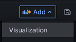
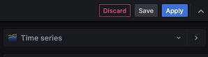
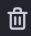
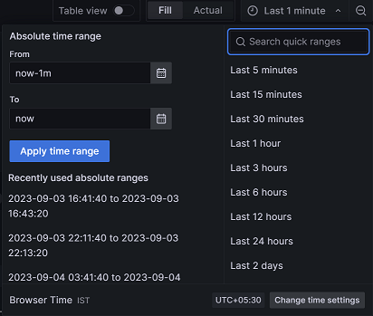

Using the query editor
By adding panels to dashboards, you can effectively present your data in a visual format. Each panel must require at least one query to display a significant visualization.
Before you begin
Procedure
- Identify the dashboard for which you want to add visualization.
- Perform one of the steps described in the following table:
-
Click + Add visualization to add visualization to your
data.
Note: The navigation of the user interface can differ based on the Grafana version that is currently installed.The Edit panel is displayed.
- Go to step 6.
-
Click from the dashboard header.

The Edit panel is displayed. -
Enter a name for the panel in the Title field.
Optionally you can also provide a description for the panel that you are creating.
When you add the description for the panel, a notification icon
 is
displayed after the Panel title.
is
displayed after the Panel title. -
Select one of the visualization types from the drop-down menu:

You can choose built-in Grafana visualization types from the drop-down list.
- Select the data sources from the Data source drop-down list.
-
Click the Query tab and provide the following details
for the Form:
Options Actions Application Select the OMEGAMON product from the Application drop-down list for which you want to monitor the data. Attribute group Select the attribute of the corresponding application from the Attribute group drop-down list. Managed systems Select the system to retrieve collected data from the Managed systems drop-down list. Group by Optional: Use the Group by option to group the result set based on the selected value. Display attribute names Select the attributes to be displayed in the graph from the Display attribute names drop-down list. Filters Optional: Use the Filters option to narrow down the data of your interest when requesting a list of values. Perform the following steps to create a filter:- Expand the Filters option.
- Click Create filter.
- Choose the attribute from the drop-down list.
- Select the one of the operator from the drop-down
list.The available operators are as follows:
Operators Meaning = Equals to < > Not equals to < Less than < = Less than or equal to > Greater than > = Greater than or equal to LIKE The value is similar to specified pattern - Enter a value for the chosen filter.Note: The Filters can accept variable values.
Remember: You can click the icon and choose between AND or OR to add multiple filters to the query. You can also delete any unnecessary filters using the  icon.System.Parma Optional: Use the system parameters to manage different aspects of system operation and performance. Perform the following steps to define a system parameter:- Expand the System.Parma option.
- Enter the parameter name in the designated field.
- Input the desired value in the corresponding field.Note: The System.Parma can accept variable values.
- Specify the length of the parameter.
For instance, if you have set TIMEOUT as a system parameter with a value of 300, the query waits for 300 seconds. If there is no activity even after this duration, TEMS will consider it a timeout condition for the TCP/IP connection and terminate the request.
Remember: You can delete any system parameter you have added using the icon.Order by Use the Order by option to arrange the attribute values in either ascending or descending order. Get near-term history data Enable the Get near-term history data setting to ON to retrieve historical data from the persistent data store. Formula When you choose values, they appear as a query in the Formula section. If you change the options, the query in the Formula section is updated accordingly. You can also adjust the values by modifying the query, and the corresponding options are modified. -
Click the Time Picker drop-down list to select relative
time range options and set custom absolute time ranges.

-
Click the Refresh dashboard
icon to query the
OMEGAMON data source.
Grafana provides you with a preview of your query results along with the corresponding visualization.
- Optional: Click Apply to view your changes applied to the dashboard.
- Click Save, and then enter a note describing the changes you have made.
- Click Save to store the changes made to the dashboard.
Results
What to do next
Grafana provides a range of visualizations that cater to different use cases. For more information about the built-in panels, options, and typical usage, refer to the Grafana documentation.
You can also configure the panel options based on your requirements. For more information refer to the Grafana documentation.